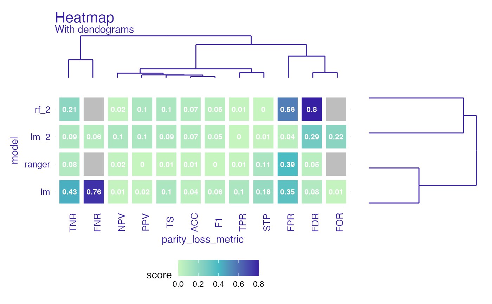

Heatmap shows all parity loss metrics across all models while displaying similarity between variables (in form of dendograms). All metrics are visible. Some have identical values as it should be in terms of their parity loss (eg. TPR parity loss == FNR parity loss, because TPR = 1 - FNR ). NA's in metrics are gray.
# S3 method for fairness_heatmap plot( x, ..., midpoint = NULL, title = NULL, subtitle = NULL, text = TRUE, text_size = 3, flip_axis = FALSE )
| x |
|
|---|---|
| ... | other |
| midpoint | numeric, midpoint on gradient scale |
| title | character, title of the plot |
| subtitle | character, subtitle of the plot |
| text | logical, default |
| text_size | numeric, size of text |
| flip_axis | logical, whether to change axis with metrics on axis with models |
list of ggplot2 objects
data("german") y_numeric <- as.numeric(german$Risk) -1 lm_model <- glm(Risk~., data = german, family=binomial(link="logit")) rf_model <- ranger::ranger(Risk ~., data = german, probability = TRUE, num.trees = 200, num.threads = 1, seed = 1) explainer_lm <- DALEX::explain(lm_model, data = german[,-1], y = y_numeric)#> Preparation of a new explainer is initiated #> -> model label : lm ( default ) #> -> data : 1000 rows 9 cols #> -> target variable : 1000 values #> -> predict function : yhat.glm will be used ( default ) #> -> predicted values : No value for predict function target column. ( default ) #> -> model_info : package stats , ver. 4.0.5 , task classification ( default ) #> -> predicted values : numerical, min = 0.1369187 , mean = 0.7 , max = 0.9832426 #> -> residual function : difference between y and yhat ( default ) #> -> residuals : numerical, min = -0.9572803 , mean = 1.940006e-17 , max = 0.8283475 #> A new explainer has been created!#> Preparation of a new explainer is initiated #> -> model label : ranger ( default ) #> -> data : 1000 rows 9 cols #> -> target variable : 1000 values #> -> predict function : yhat.ranger will be used ( default ) #> -> predicted values : No value for predict function target column. ( default ) #> -> model_info : package ranger , ver. 0.12.1 , task classification ( default ) #> -> predicted values : numerical, min = 0.0481369 , mean = 0.6971034 , max = 0.9973909 #> -> residual function : difference between y and yhat ( default ) #> -> residuals : numerical, min = -0.733313 , mean = 0.00289659 , max = 0.6673294 #> A new explainer has been created!#> Creating fairness object #> -> Privileged subgroup : character ( Ok ) #> -> Protected variable : factor ( Ok ) #> -> Cutoff values for explainers : 0.5 ( for all subgroups ) #> -> Fairness objects : 0 objects #> -> Checking explainers : 2 in total ( compatible ) #> -> Metric calculation : 10/12 metrics calculated for all models ( 2 NA created ) #> Fairness object created succesfully# same explainers with different cutoffs for female fobject <- fairness_check(explainer_lm, explainer_rf, fobject, protected = german$Sex, privileged = "male", cutoff = list(female = 0.4), label = c("lm_2", "rf_2"))#> Creating fairness object #> -> Privileged subgroup : character ( Ok ) #> -> Protected variable : factor ( Ok ) #> -> Cutoff values for explainers : female: 0.4, male: 0.5 #> -> Fairness objects : 1 object ( compatible ) #> -> Checking explainers : 4 in total ( compatible ) #> -> Metric calculation : 10/12 metrics calculated for all models ( 2 NA created ) #> Fairness object created succesfully#> Warning: Removed 4 rows containing missing values (geom_text).